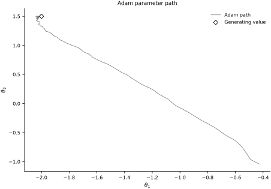
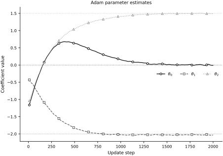
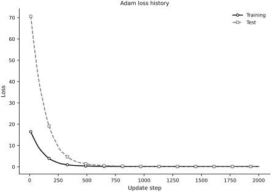

Optimization Algorithms with Adaptive Learning Rates#
Gradient descent uses one learning rate to scale every component of the gradient. When the gradient components have very different scales, a single rate can make some parameters move too slowly while others oscillate. Adaptive methods address this problem by giving each parameter a scale computed from its gradient history.
The delta-bar-delta rule#
Jacobs (1988) introduced the “delta-bar-delta” rule, an early adaptive learning-rate algorithm. The rule maintains a separate learning rate for each parameter. If a component of the gradient keeps the same sign on consecutive steps, its rate increases; if the sign changes, its rate decreases. A persistent sign suggests that the parameter can move faster, whereas repeated sign changes suggest oscillation. This coordinatewise adaptation motivates the methods that follow.
Adaptive gradient algorithm (AdaGrad)#
The AdaGrad algorithm was introduced by Duchi et al. (2011). Let \(n\) be the number of parameters and let \(f:\mathbb{R}^n\to\mathbb{R}\) be a differentiable objective. At step \(t\geq 1\), let \(x_{t-1}\in\mathbb{R}^n\) be the current parameter vector and let \(g_t=\nabla f(x_{t-1})\in\mathbb{R}^n\) be its gradient. The vector \(r_t\in\mathbb{R}^n\) stores one nonnegative scale for each parameter. Let \(\alpha>0\) be the base learning rate and let \(\epsilon>0\) be a small constant that prevents division by zero. Squares, square roots, divisions, and additions of \(\epsilon\) involving vectors below are all performed componentwise.
Starting from an initial parameter vector \(x_0\) and the zero vector \(r_0=0\), AdaGrad applies
For any coordinate \(i\in\{1,\ldots,n\}\), the \(i\)th parameter has the effective learning rate \(\alpha/\sqrt{r_{t,i}+\epsilon}\). A history of large values of the gradient component \(g_{t,i}\) makes this rate decrease quickly, whereas a history of small values makes it decrease slowly.
AdaGrad’s effective learning rates decrease monotonically. On long optimization runs they can become so small that progress stalls, which motivates the moving-average construction used by RMSProp.
Root mean square propagation (RMSProp)#
Hinton et al. (2012) presented RMSProp in course lectures rather than in a journal paper. RMSProp prevents the scale from growing indefinitely by replacing AdaGrad’s cumulative sum with an exponentially weighted moving average. Using the notation above, choose a decay factor \(\beta\in[0,1)\) and initialize \(r_0=0\). RMSProp applies
The factor \(\beta\) controls how slowly the algorithm forgets old squared gradients. Because old values lose weight, the effective learning rates need not decrease monotonically.
Adaptive moment estimation (Adam)#
The Adam algorithm was introduced by Kingma and Ba (2015). Adam combines the moving average of gradients used by momentum with the moving average of squared gradients used by RMSProp. Choose decay factors \(\beta_1,\beta_2\in[0,1)\), and initialize the gradient-average accumulator \(m_0\) and squared-gradient-average accumulator \(v_0\) as zero vectors in \(\mathbb{R}^n\). The bias-corrected accumulators are denoted by \(\hat{m}_t\) and \(\hat{v}_t\). Adam applies
Zero initialization makes the two moving averages too small during the first few steps. The factors \(1-\beta_1^t\) and \(1-\beta_2^t\) remove this initialization bias. For example, at the first step,
Common starting values are \(\beta_1=0.9\), \(\beta_2=0.999\), and \(\epsilon=10^{-8}\), while the base learning rate \(\alpha\) remains a problem-dependent choice.
Consider again the quadratic regression model \(h(z;\theta)=\theta_0+\theta_1z+\theta_2z^2\) from minibatch stochastic gradient descent, where \(z\in\mathbb{R}\) is the input and \(\theta=(\theta_0,\theta_1,\theta_2)\in\mathbb{R}^3\) is the coefficient vector. The example generates data with coefficient vector \(\theta=(0,-2,1.5)\) and estimates it with the Optax implementation of Adam. For both the training and test sets, the reported loss is the average of \(\frac{1}{2}(h(z;\theta)-y)^2\) over the observed input-response pairs \((z,y)\).
key, model_key, shuffle_key = jrandom.split(key, 3)
model = MyModel(model_key)
optimizer = optax.adam(0.01, b1=0.9, b2=0.999, eps=1e-8)
model, path, steps, train_losses, test_losses = train_batch(
model,
X, y,
optimizer,
X_test, y_test,
key=shuffle_key,
batch_size=10,
n_epochs=20,
record_every=10,
)
thetas = np.stack([model.theta for model in path])
true_theta = np.array([0.0, -2.0, 1.5])
# Path of the two nonconstant coefficients
fig, ax = plt.subplots(figsize=FIGURE_SIZES["full_standard"])
ax.plot(thetas[:, 1], thetas[:, 2], color="0.2", alpha=0.65, lw=0.8, label="Adam path")
ax.scatter(
[true_theta[1]], [true_theta[2]], marker="D", s=28,
facecolor="white", edgecolor="black", linewidth=0.9,
label="Generating value", zorder=3,
)
ax.set(xlabel=r"$\theta_1$", ylabel=r"$\theta_2$", title="Adam parameter path")
ax.legend(loc="best")
finalize_axes(keep_box=False)
# Parameter estimates by optimizer update
fig, ax = plt.subplots(figsize=FIGURE_SIZES["full_standard"])
line_styles = ["-", "--", ":"]
markers = ["o", "s", "^"]
gray_levels = ["0.0", "0.35", "0.60"]
mark_every = max(1, len(steps) // 12)
for i, (line_style, marker, gray) in enumerate(
zip(line_styles, markers, gray_levels)
):
ax.plot(
steps, thetas[:, i], color=gray, linestyle=line_style,
marker=marker, markevery=mark_every, markerfacecolor="white",
markeredgecolor=gray, linewidth=1.2, label=rf"$\theta_{i}$",
)
ax.axhline(
true_theta[i], color=gray, linestyle=(0, (1, 2)),
linewidth=0.8, alpha=0.8,
)
ax.set(xlabel="Update step", ylabel="Coefficient value", title="Adam parameter estimates")
ax.legend(loc="best", ncol=3)
finalize_axes(keep_box=False)
# Training and test losses
fig, ax = plt.subplots(figsize=FIGURE_SIZES["full_standard"])
ax.plot(
steps, train_losses, color="black", linestyle="-",
marker="o", markevery=mark_every, markerfacecolor="white",
label="Training",
)
ax.plot(
steps, test_losses, color="0.45", linestyle="--",
marker="s", markevery=mark_every, markerfacecolor="white",
label="Test",
)
ax.set(xlabel="Update step", ylabel="Loss", title="Adam loss history")
ax.legend(loc="best")
finalize_axes(keep_box=False);



The estimated coefficients approach the generating values, while both the training and test losses decrease. Adam is a useful baseline, although it is not universally best and its hyperparameters may still require tuning. Its coordinatewise scaling also does not replace a schedule for the base learning rate \(\alpha\); changing or reducing \(\alpha\) during training may still improve convergence.